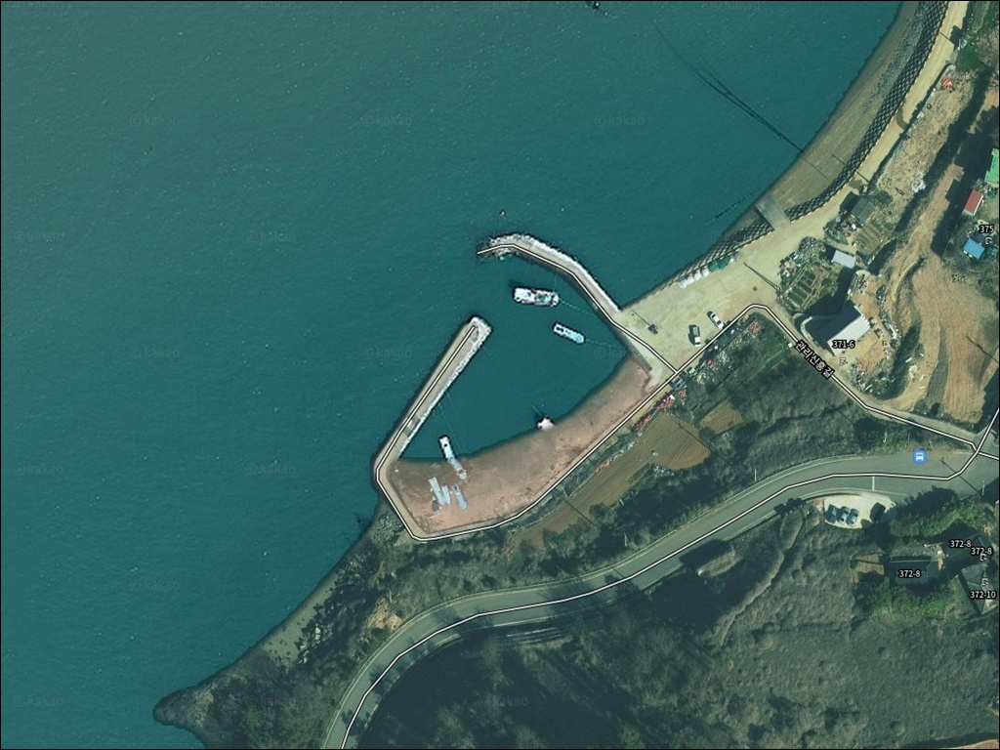
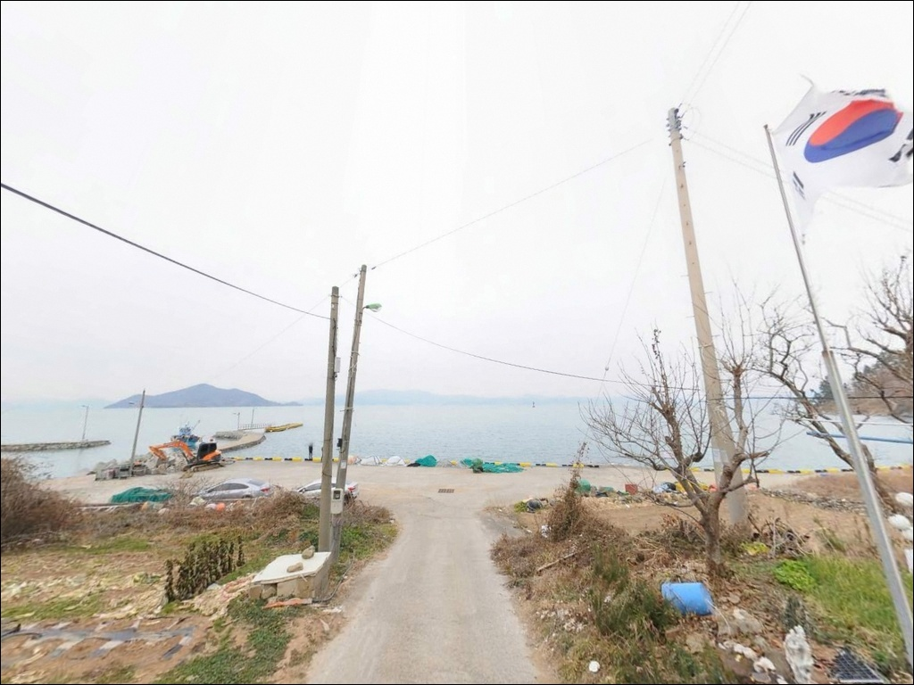
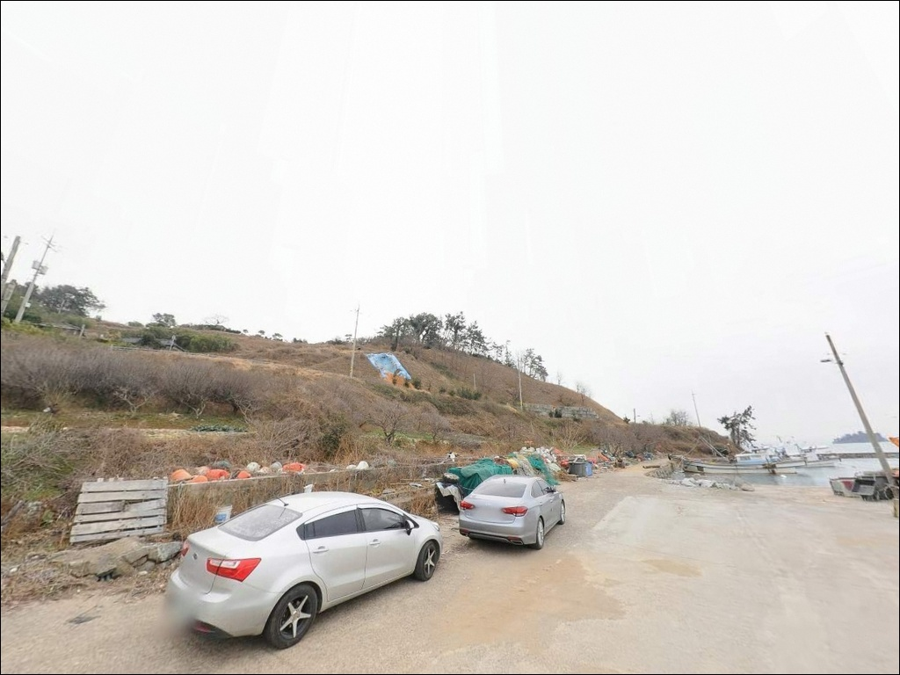
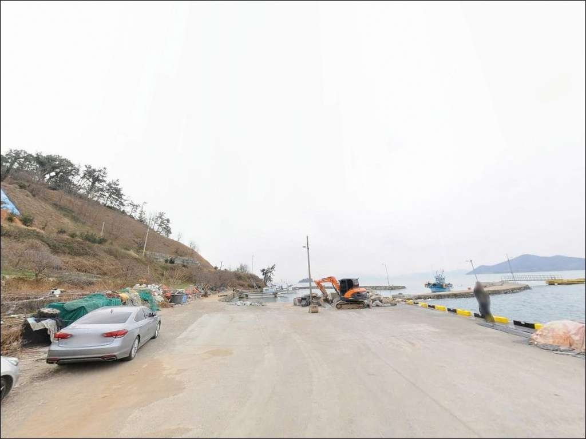
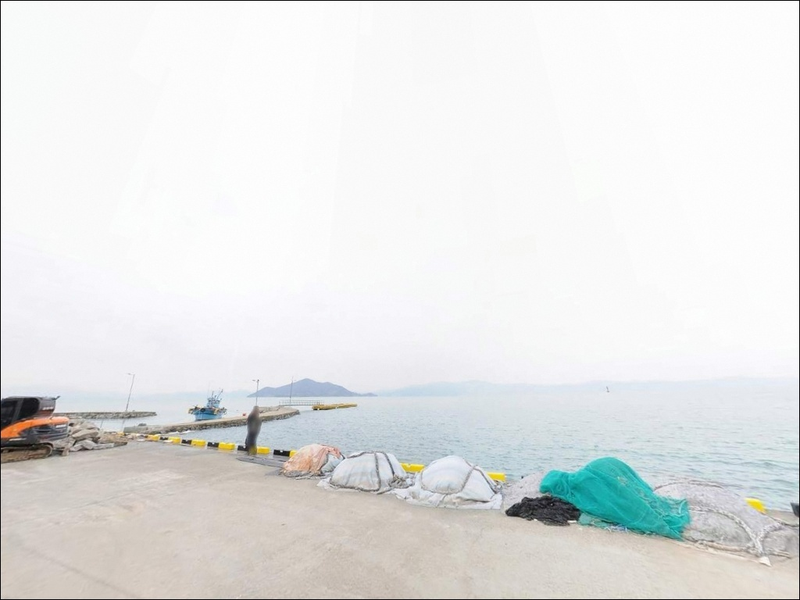
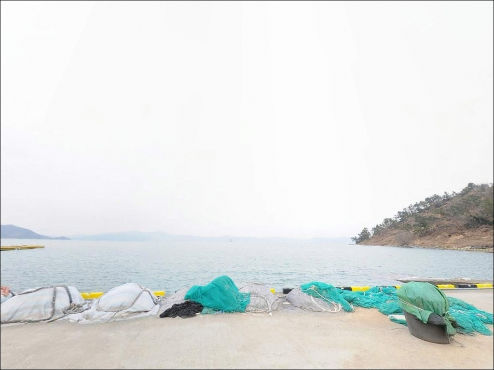
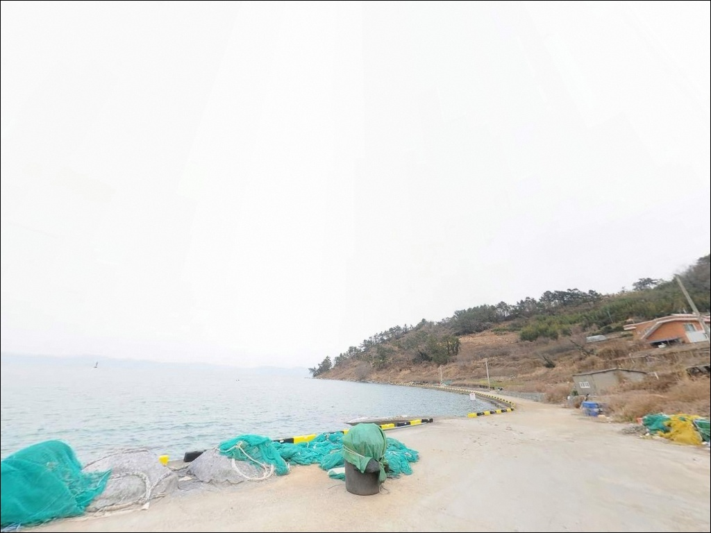
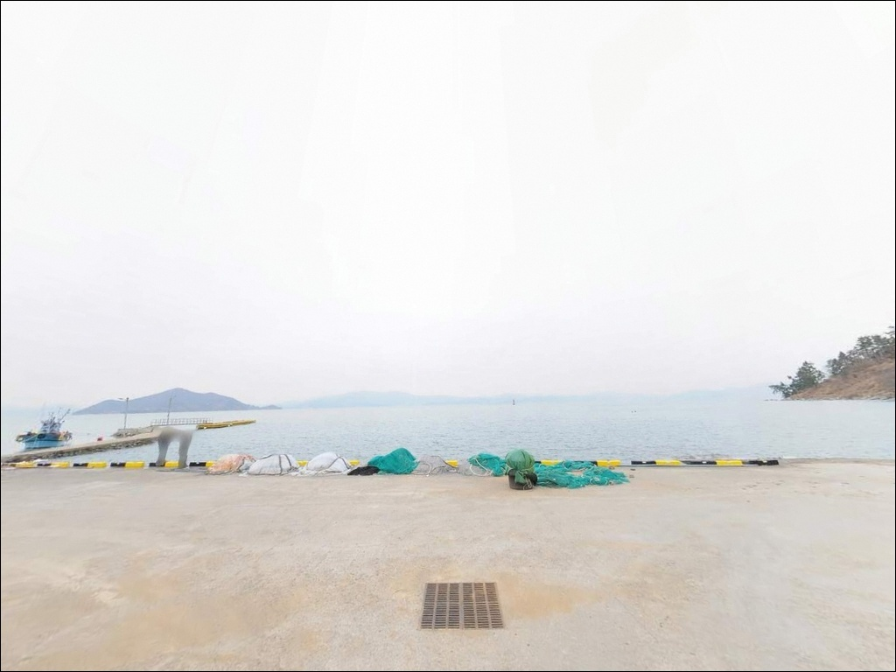
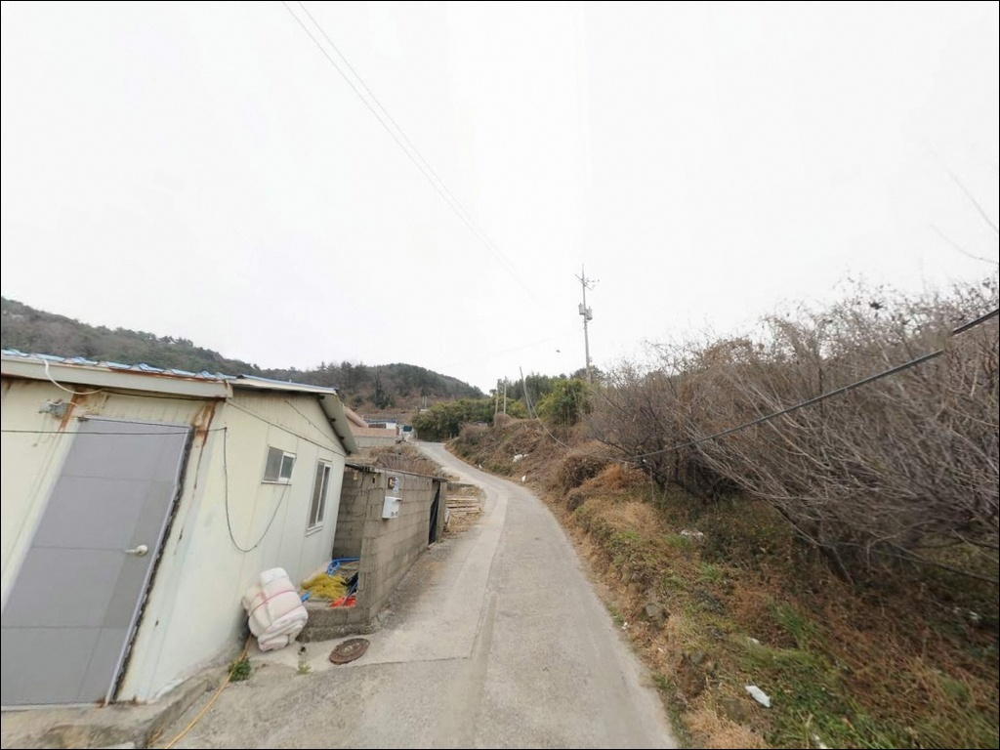

고흥 장계리방파제 외항 콧부리와 꺾임 구간에서 살아난 갑오징어 입질
이 페이지에는 광고(제휴 링크 포함)가 있으며, 광고 링크를 통해 구매하면 운영자가 판매 수익 또는 수수료를 받을 수 있습니다. 포인트 사진: 카카오맵 스카이뷰·로드뷰. 이 페이지의 지도·사진 이미지는 카카오맵의 실제 서비스 이미지와 다를 수 있습니다.


포인트 안내
장계리방파제
전남 고흥군 도양읍 장계리 167-6
장계리방파제에서 가장 많이 놓치는 판단은
내항과 외항 구분 없이
아무 자리에나 채비를 내리는 것입니다.
외항 콧부리와 꺾임 구간은 조류가 살아 있고
입질 집중도가 다른 자리와 확연히 다릅니다.
내항 쪽에 자리를 잡으면
조류 흐름을 활용하지 못한 채
빈 채비만 내리는 결과로 이어질 수 있습니다.
전남 고흥군 도양읍 장계리,
해안도로에 바로 면한 이 방파제는
좌측과 우측에 방파제가 마주 보는 구조이며
우측 대형 방파제가 메인 낚시 구간입니다.
테트라포드 없이 석축으로만 이루어진 발판은
안정성이 높고, 방파제 폭이 넓어
차량을 옆에 세운 채 낚시가 가능합니다.
이 글은 장계리방파제의
진입 동선, 차박 여건, 지형 기반 낚시 조건,
스타일별 공략 방법에 집중합니다.
특정 어종 조황 단정이나
시설 확정 정보는 이 글의 범위에 포함되지 않습니다.

1. 진입 동선과 포인트 접근성
장계리방파제는 도양읍 봉암리(녹동) 방향에서
해안도로를 따라 접근하는 구조입니다.
2차선 포장도로가 방파제 입구까지
직접 연결되어 있으며,
비포장 구간이나 급격한 경사 구간 없이
진입 자체는 어렵지 않은 편입니다.
방파제 초입은 슬로프가 설치된
넓은 공터 구조입니다.
승용차, SUV, 소형 캠핑 차량 모두
진입과 회차가 무리 없이 가능한 여건이며,
방파제 상부 폭이 넓어
차량 교행이 가능한 구간도 존재합니다.
주차는 방파제 초입 공터와
슬로프 주변이 1순위 후보입니다.
방파제 위로 직접 진입한 뒤
차 옆에서 채비를 내리는 방식이
이 포인트에서 일반적인 운용 방식입니다.
어선 접안 구역과 통행 동선을
먼저 파악하고 자리를 잡아야 합니다.

2. 차박 환경과 야간 체류 여건
장계리방파제는 방파제 폭이 넓고
차량을 세운 채 낚시가 가능한 구조 덕분에
낚시와 차박을 동시에 운용하기 좋은
포인트입니다.
방파제에 가로등이 설치되어 있어
야간 기본 시야는 확보되는 편이며,
두족류와 갈치 야간 낚시 포인트로
현지에서 활용되고 있습니다.
마을과 인접한 구조로
완전한 고립형 환경은 아닙니다.
민가 생활 조명 영향이 일부 있으나
야간 차량 통행이 많지 않아
체류 환경 자체는 조용한 편입니다.
외항 쪽은 가로등이 닿지 않는 구간도 있으므로
개인 헤드랜턴은 반드시 챙겨야 합니다.
고흥 도양읍 해안은 내만 구조 특성상
파도 영향이 제한적입니다.
다만 북서풍이 부는 가을·초겨울에는
외항 방향으로 바람이 치는 경우가 있어
기상청 예보 확인 후
체류 자리를 결정하는 편이 안전합니다.


3. 주변 편의시설 및 인프라 현황
장계리방파제에서 녹동 방향으로
해안도로를 따라 3~5km 이동하면
도양읍 봉암리(녹동) 상권이 나옵니다.
편의점, 마트, 식당, 주유소가
이 권역에 집중되어 있으며,
낚시용품점도 녹동항 인근에 확인됩니다.
포인트 자체에는 독립 편의시설이 없습니다.
방파제 해안선을 따라
인접한 장예마을 방파제 일대에
공용 화장실과 쉼터가 설치되어 있어
이 구간 전체를 묶어
낚시·휴식 동선을 계획하는 것이 효율적입니다.
응급 상황 시 도양읍 소재 의료기관을
사전에 파악해 두는 것이 좋습니다.
연료와 식수는 녹동 상권에서 미리 보충하고
출조하는 것이 기본 준비입니다.

4. 방문 전 반드시 챙겨야 할 준비사항
장계리방파제 방문 전
가장 먼저 확인할 것은 물때입니다.
도양읍 해안은 서해와 남해의 경계 해역으로
조류 흐름이 뚜렷하며,
들물이 들어오는 타이밍에
외항 방향 조류가 살아나
에깅과 루어 운영이 수월해집니다.
가을~초겨울에는 두족류와 갈치 시즌이
겹치는 패턴이 이 권역에서 형성됩니다.
갑오징어 에깅과 갈치 루어를 동시에
준비해 가는 것이 이 포인트에서
운용 효율을 높이는 방식입니다.
석축 구간에서 미끄럼 위험이 있으므로
바닥이 미끄럼 방지 처리된 낚시화를 신어야 합니다.
방파제 위는 어선 통행과 낚시인이
함께 사용하는 공간입니다.
어선 입출항 구역에 채비를 던지지 않고,
캐스팅 방향을 항상 어선 동선 바깥으로
유지하는 것이 기본 매너입니다.
구명조끼는 야간·외항 낚시 시
착용이 원칙입니다.

5. 외항 조류 구간을 잡아야 조과가 달라지는 이유
장계리방파제는 외항이
남서 방향 개방 해역을 향하는 구조입니다.
이 방향에서 들어오는 조류가
방파제 콧부리와 가운데 꺾이는 구간에
집중되며,
두 지점이 이 포인트의 핵심 낚시 자리입니다.
수심은 만조 기준 7m 내외로
도양읍 일대 소형 방파제보다 깊은 편이며,
방파제 끝단과 꺾임 구간에서
수심 변화가 뚜렷이 나타납니다.
바닥은 뻘과 모래가 섞인 혼합 저질 구조로,
연안 가까이 수중여가 산재해 있어
두족류가 은신하기 유리한 지형 조건입니다.
내항은 조류 영향이 적고 수면이 잔잔합니다.
원투낚시나 찌낚시 운용이
내항 쪽에서 이루어지는 패턴이며,
어선 정박 구역과 겹치지 않는
여유 구간을 확인하고 자리를 잡아야 합니다.
최신 조황은 출조 전 검색으로
반드시 확인하시기 바랍니다.


6. 장계리방파제에서 어울리는 낚시 스타일
가을~초겨울에 이 포인트에서
가장 활발하게 이루어지는 낚시는
갑오징어 에깅과 문어 루어입니다.
외항 전면과 연안 암초 구간이
두족류 공략에 잘 맞는 지형 조건이며,
고흥 도양읍 일대 전역이
두족류 자원이 풍부한 해역으로 알려져 있습니다.
갈치 루어와 집어낚시도
이 포인트에서 병행되는 패턴입니다.
북서풍이 부는 10~11월에
외항 방파제 구간에서
두족류와 갈치가 겹치는 시즌이 형성되며,
야간 가로등 불빛 아래 자리가
집어 효과를 높이는 구간입니다.
릴찌낚시는 외항 콧부리와 꺾임 구간에서
조류를 타고 흘리는 방식으로 운용합니다.
감성돔을 기대해 볼 수 있는 방식이며,
발밑 입질도 확인되는 구간이 있습니다.
원투낚시는 외항 방파제 전구간에서
채비를 펼치기 좋은 조건이 갖춰져 있으며,
야간 운용 효율이 높은 편입니다.

7. 대안 포인트와 플랜 B 동선
장계리방파제 자리가 꽉 차 있거나
외항 조류 조건이 맞지 않는 날에는
장예마을 방파제가 첫 번째 대안입니다.
해안도로를 따라 녹동 방향으로
이동하면 나오는 포인트로,
공용 화장실과 원두막이 설치되어 있어
편의시설 여건이 장계리보다 낫습니다.
장예마을 방파제는 갑오징어·문어 루어와
원투낚시가 함께 이루어지는 구조로,
가로등도 설치되어 있어
야간 운용이 가능한 포인트입니다.
장계리 출조 시 함께 묶어
이동 동선에 포함해 두면 효율적입니다.
녹동항 소록대교 하부 방파제는
장계리에서 북쪽으로 5km 내외 거리입니다.
진입과 주차가 안정적이고 낚시 자리가 넓으며,
감성돔과 문어 포인트로 검증된 곳입니다.
장계리 조건이 기대에 못 미칠 때
가장 먼저 이동할 대안 포인트입니다.

외항 자리와 물때를 알면
장계리방파제가 다르게 보입니다
가을 두족류 시즌에 고흥 도양읍 권역을
찾는 낚시인이라면
장계리방파제의 구조는 잘 맞는 편입니다.
석축 발판, 넓은 방파제 폭,
차량을 옆에 세운 채 낚시할 수 있는 구조가
장거리 출조 부담을 줄여주는 조건이며,
가로등 덕분에 야간 채비 운용도
편리한 편입니다.
외항 콧부리와 꺾임 구간을 선점하지 못하거나,
물때 확인 없이 썰물 중에 진입하면
이 포인트가 가진 조건을
절반도 활용하지 못하는 상황이 됩니다.
물때 확인과 자리 선점,
이 두 가지가 이 방파제 출조에서
성패를 가르는 기본 판단 기준입니다.
차박 낚시 형태로 운용할 계획이라면
녹동 상권에서 물자를 보충한 뒤
장계리로 이동하고,
조건이 맞지 않으면 장예마을 방파제를
바로 대안으로 잡는 동선이
이 권역에서 가장 효율적인 여정입니다.